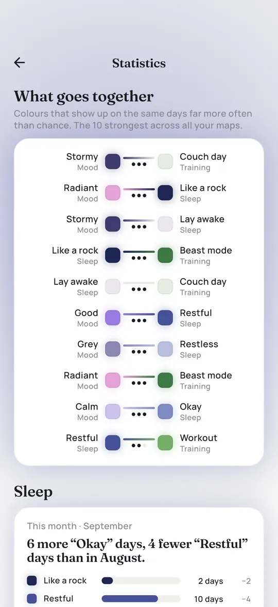

How to keep a mood diary you will actually keep
A mood diary is a simple record of how you felt each day. Kept for a few weeks, it can show patterns you would never notice from the inside. Here is a format that takes under a minute a day, and how to make sense of it afterwards.
What a mood diary is
A mood diary, also called a mood log or mood chart, is a daily note of how you felt, usually as a number or a color, sometimes with a few words about the day. It is not the same as a journal where you write pages. The point is consistency, not depth: the same small question, answered every day.
Mental health organisations recommend mood diaries for different reasons. The charity Bipolar UK, for example, offers a printable mood diary to help people notice early warning signs of mood episodes. But you do not need a diagnosis to find one useful. Many people simply want to understand their own ups and downs better.
Why keep one
- Memory is unreliable. Asked how the last month was, most of us remember the last few days and one or two big moments. A diary remembers the rest.
- Patterns become visible. Low days after short nights, better weeks when you were outside more, a dip that comes back every month. You only see these with data.
- Naming a feeling can help. Research on so called affect labeling suggests that putting a feeling into words can reduce its intensity a little (Lieberman and colleagues, 2007). A daily check in is a tiny version of that.
- Conversations get easier. Showing a doctor or therapist eight weeks of mood data is more precise than saying it has been bad lately.
What to record
Start small. You can always add more later, and every extra field is a reason to skip a day. This is a format that works for most people:
| Field | How | Why |
|---|---|---|
| Mood | A scale of 1 to 5 or five colors | The core of the diary |
| Sleep | Hours, or a quality rating | The most common hidden driver of mood |
| Energy | Low, medium, high | Separates tired from sad |
| One line | What stood out today | Context when you look back |
| Optional | Anxiety, period, alcohol, exercise, medication taken | Only if you want to see their effect |
If you take medication or are in treatment, ask your doctor or therapist which fields matter for you. They may want specific things recorded, such as sleep hours or irritability.
When and how often
Once a day, at the same time. Two moments work well:
- In the evening, about today. Fresh memory, but you are tired and the last hour colors the whole day.
- In the morning, about yesterday. A night's distance makes the rating calmer and the day is complete. This is easier to stick to for many people, and it is how Pixi asks.
Pick one and keep it. Mixing both makes days harder to compare. If you miss a day, fill it in within a day or two and leave older gaps empty.


Reading your diary after a few weeks
After about four weeks there is enough to look at. Sit down once a month with these questions:
- How many good, okay and bad days were there? Count them. It is often better or worse than it felt.
- Are there streaks? Several low days in a row deserve more attention than single bad days.
- Do weekdays differ? Sunday evenings and Monday mornings are classic dips.
- What shows up together? Compare mood with sleep, energy, exercise or your cycle.
Be careful with conclusions. If bad moods and short nights show up together, that can mean the short nights cause the bad mood, or the bad mood keeps you awake, or both come from a stressful week. A diary shows what goes together. It does not prove why.
Sharing it with a professional
If you see a doctor, psychiatrist or therapist, bring your diary. A grid of colors or a simple chart is easy to scan in a short appointment. Mention anything unusual: weeks with very little sleep, sudden changes, or days you could not get out of bed. Pixi keeps everything on your phone, and you can export your data or share an image of a map when you want to show it.
When you need more than a diary
A mood diary is not a treatment and not a diagnosis. If your mood has been low for more than two weeks, if it gets in the way of daily life, or if you notice big swings, please talk to a doctor or mental health professional. The NHS Every Mind Matters site has good first steps.
If you are thinking about harming yourself, contact emergency services or a crisis line now. In the US, call or text 988. In the UK and Ireland, Samaritans are free on 116 123. In Germany, the TelefonSeelsorge is free on 0800 111 0 111.
Questions and answers
What should I write in a mood diary?
At minimum your mood on a simple scale. Sleep, energy and one line about the day make it much more useful. Add other things only if you want to see their effect.
How long should I keep a mood diary?
At least four weeks before you look for patterns. Many people keep a simple one running all year because the long view shows seasons and cycles.
Is a mood diary the same as a mood tracker?
Mostly yes. A mood tracker usually means just the rating, often as colors in a grid. A mood diary may add a few words or extra fields. Both work the same way: one small entry per day.
Can a mood diary help with depression or bipolar disorder?
It can help you and your care team notice changes and patterns, which is why some organisations recommend one. It does not replace diagnosis or treatment. Please work with a professional if you have or suspect a mood disorder.

Written by Caspar Baumeister. I'm an indie developer in Berlin and I build Pixi on my own. I read every message, so if something here is unclear or you have an idea for the app, write to me: @casparbuilds on X or email.